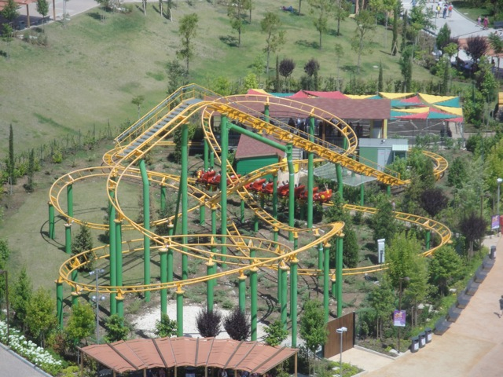

| |
Bombo Review

We're here at Rainbow Magicland where's we'll be revewing their Roller Skater. Bombo. Now, I like these rides. And this is the Big Model. So I like it even more. Anyways, lets get moving. We pull down the lap bar, and we're off. We go around a turn, climb the lifthill, and go down the curved first drop. Wee!! We've got some speed now. We go around a curve and slightly turn up before dipping back down towards the ground. We rise up, go through a turnaround, and dip back down. We rise up, go through another helix back down towards the ground. We roll through another turn and into the brake run. With these large Roller Skaters, these are the coasters where I start to think to myself, "Is this a kiddy coaster?". Seriously, this is the area where the line starts to get fuzzy. But hey, I enjoy these rides and wouldn't mind taking another spin.
4/10
Location: Rainbow Magicland
Opened: 2011
Built by: Vekoma
Last Ridden: June 18, 2012
I have ridden this exact same ride at the following parks.
Cedar Point
Fårup Sommerland
Tusenfryd
Universal Studios Japan
Bombo Photos


Home
|